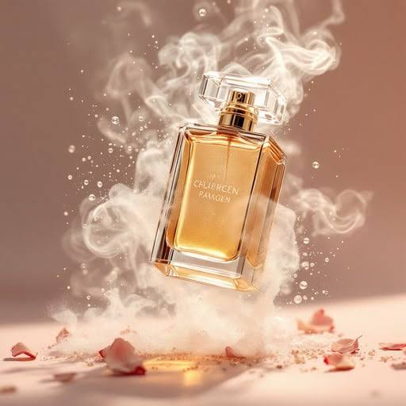

<html>
   <link rel="stylesheet"href=style.css >
</html>

<body>

    <h1>KD Fragrances presents you the timeless elegance and comfort</h1>
<div class="kani">
    

</div>


    <div class="details">
        <h3>Luxury Perfume</h3>
        <p>₹80,000</p>
 <a href="registration.html" class="shop-btn">Shop Now</a>
    </div>
</div>
<center>
    <h1>ABOUT✨</h1>
</center>
<h4>Natural Fragrance CompoundsEssential Oils: Volatile plant oils obtained through steam distillation, such as peppermint, patchouli, or lavender.Absolutes: Highly concentrated, oily mixtures extracted using solvents, used for delicate materials like Rose Absolute and Jasmine Absolute.Resins & Balsams: Thick, sticky tree secretions like Frankincense, Benzoin, and Myrrh that provide deep, warm background notes.Expression Oils: Cold-pressed oils extracted directly from the rinds of citrus fruits like Bergamot, Lemon, and Orange</h4>

<h4>Iso E Super: A smooth, synthetic molecule that creates a subtle, velvety woody-amber finish.Ambroxan: A laboratory creation used to replicate the rich, warm, and salty-sweet scent profile of rare ambergris.Coumarin: A synthetic or plant-derived crystalline compound that smells like freshly cut hay, vanilla, and almonds.Vanillin & Ethyl Vanillin: Intense synthetic compounds used to mimic or enhance natural vanilla bean extract.Hedione: An aroma chemical that adds a radiant, fresh, and airy green-jasmine luminosity to a fragrance.Stabilisers & PreservativesBHT (Butylated Hydroxytoluene): An antioxidant added to prevent the fragile perfume oils from spoiling, turning rancid, or degrading in sunlight.UV Filters: Compounds like Benzophenone that protect the chemical liquid from changing color when exposed to light</h4>
<div class="background-animation"></div>
</body>